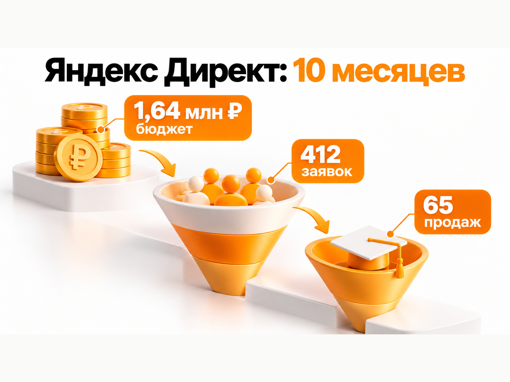
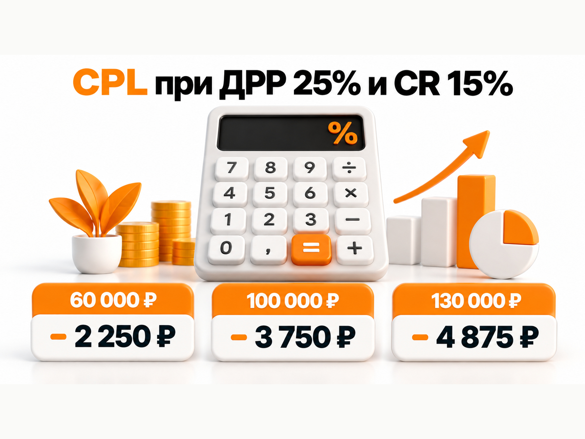

Блог о платном трафике
Продвижение онлайн-школы психологии в 2026 году: Яндекс Директ, бюджет и прогноз
Онлайн-школа психологии подходит для продвижения через Яндекс Директ, особенно если продает профессиональную переподготовку, повышение квалификации или отдельные специализации для практикующих психологов. В этой нише есть сформированный поисковый спрос, а стоимость обучения позволяет покупать относительно дорогие заявки, если они нормально конвертируются в продажи.
Но ориентироваться только на CPL здесь опасно. В одном подробном кейсе онлайн-школы психологии отдельные рекламные направления давали заявки примерно по 1 500-4 000 ₽, а другое направление доходило почти до 18 000 ₽ за заявку. При этом дешевый лид далеко не всегда приносил продажу.
Поэтому прогноз я бы строил от полной цепочки:
реклама -> заявка -> квалифицированная заявка -> продажа -> выручка
Ниже разберу спрос за 2025 год, реальные результаты Яндекс Директа и расчет бюджета для новой рекламной кампании.
Что происходило с нишей психологии в 2025 году
По итоговому отчету GetCourse оборот категории «Психология и отношения» за 2025 год составил 19,2 млрд ₽. В другом итоговом материале платформы указано 19,5 млрд ₽. Это не размер исключительно рынка профессиональных онлайн-школ психологии: в категорию входят программы по отношениям, самопомощи, коучингу и повышению квалификации психологов. Но цифры показывают, что сама тематика крупная и платежеспособная.
По данным GetCourse, с мая по ноябрь 2025 года оборот категории «Психология и отношения» вырос на 9,1%. Психология также оказалась одной из наиболее распространенных тематик среди крупнейших школ платформы.
Для Яндекс Директа еще интереснее динамика поискового спроса.
Открытый анализ данных Яндекс Вордстата по России за март 2024 - февраль 2026 показывает, что в 2025 году спрос на профессиональное обучение психологии распределялся по году неравномерно, но одного короткого сезона у ниши нет.
| Запрос | Характерные значения 2025 года |
|---|---|
| психология обучение дистанционно | январь - 7 150, июль - 6 279, август - 5 716, декабрь - 2 421 |
| повышение квалификации психолога | январь - 6 183, июнь - 6 039, август - 6 378, сентябрь - 6 140, октябрь - 6 415 |
| дополнительное образование психолога | январь - 1 548, июль - 1 341, сентябрь - 1 701, октябрь - 2 127, ноябрь - 1 805 |
| обучение психотерапии | январь - 3 814, февраль - 3 898, март - 3 722, июнь - 4 136 |
Это анализ сторонней компании на основе Вордстата, а не официальное исследование Яндекса, поэтому я бы использовал его именно как показатель сезонности, а не как абсолютную оценку объема рынка.
Для медиаплана из этих данных следует полезный вывод: рекламу школы психологии нет смысла рассматривать только как осеннюю кампанию. Сильный спрос наблюдался в январе, летом и с августа по октябрь. Декабрь для части запросов заметно слабее.

Что показал реальный Яндекс Директ онлайн-школы психологии
Самый подробный открытый кейс, который я нашел, относится именно к онлайн-школе психологии. Школа продавала программы для новичков и практикующих специалистов со средним чеком 120 000-130 000 ₽. Период основного кейса - сентябрь 2024 - июль 2025.
За 10 месяцев Яндекс Директ дал:
| Показатель | Результат |
|---|---|
| Рекламный бюджет | 1 636 067 ₽ |
| Заявки | 412 |
| CPL | 3 971 ₽ |
| Переходы на сайт | около 20 000 |
| Продажи | 65 |
| Выручка | 4,8 млн ₽ |
Источник отдельно указывает конверсию в оплату 18-30% в зависимости от курса и канала. Если пересчитать общий результат Яндекс Директа по опубликованным цифрам, 65 продаж из 412 заявок дают около 15,8% общей конверсии заявки в продажу. Это мой расчет по исходным данным, а не отдельная цифра из кейса.
Рекламный CAC по этой же арифметике получается примерно 25 170 ₽ за продажу.
При этом усреднение скрывает огромную разницу между направлениями.
Одна из сильных поисковых связок потратила около 249 000 ₽, получила 165 заявок примерно по 1 511 ₽, 42 оплаты и 2,9 млн ₽ выручки. ДРР составила 8,6%. По горячим поисковым и брендовым кампаниям в кейсе пришлось около 80% продаж.
Но параллельно были совершенно другие результаты. По направлению «клиническая психология» получили всего три заявки по 17 959 ₽. По схема-терапии - 17 заявок по 4 088 ₽, но слабую конверсию в оплату и ДРР 86%. Ретаргетинг в РСЯ потратил 82 116 ₽ и дал одну оплату на 99 000 ₽.
Именно поэтому фраза «заявка в онлайн-школе психологии должна стоить 4 000 ₽» будет неправильной.
3 971 ₽ - результат конкретного проекта за конкретный период. Отдельные курсы внутри него отличались по экономике в разы.

Дешевая заявка может оказаться самой дорогой
В этом же проекте сначала тестировали бесплатный мини-курс «Психолог с нуля».
На двух рекламных площадках потратили около 80 000 ₽, получили 57 заявок по 1 413 ₽ и ни одной продажи. В Яндекс Директе отдельно было 11 заявок по 2 814 ₽.
После этого фокус сместили на действующих психологов, которым уже не нужно объяснять ценность профессии. Они искали конкретные программы, методы и повышение квалификации.
Для меня это один из главных выводов по нише.
Лид-магнит может давать красивый CPL, но если дальше человек не покупает программу стоимостью 60 000-130 000 ₽, такая заявка практически ничего не стоит для бизнеса.
Поэтому в онлайн-школе я бы сразу смотрел минимум на три уровня:
CPL -> стоимость квалифицированной заявки -> стоимость оплаты
А конечной метрикой оставлял бы выручку и ДРР.
Что показало продолжение кейса в 2025-2026 году
У этой же Академии современной психологии есть более свежее продолжение кейса за сентябрь 2025 - март 2026 года. На этом этапе стоимость программ находилась в диапазоне 60 000-130 000 ₽, а цикл от заявки до оплаты составлял от одного до трех месяцев.
В марте 2026 года рекламный бюджет Яндекс Директа увеличили с 338 000 до 430 000 ₽. Получили 136 заявок, выручку 3,13 млн ₽ и ДРР 13,75%. Если разделить опубликованный бюджет на количество заявок, получится примерно 3 162 ₽ за заявку. Это мой расчет по опубликованным данным.
Но делить мартовскую выручку на мартовские заявки и считать из этого конверсию нельзя. Часть покупок в марте сделали люди, которые оставляли заявки в январе и феврале. При цикле сделки до трех месяцев это нормальная ситуация.
Поэтому онлайн-школе психологии нужна когортная аналитика. Заявка февраля может превратиться в деньги в апреле, а рекламная кампания, которая по итогам текущего месяца кажется слабой, после дозревания клиентов окажется прибыльной.
Как я бы сегментировал аудиторию онлайн-школы психологии
Главное разделение здесь проходит не по полу или возрасту, а по уровню сформированности потребности.
Первый сегмент - действующие психологи. Они ищут повышение квалификации, конкретные методы работы, КПТ, АКТ, семейную терапию, работу с отдельными группами клиентов и другие специализации. Это самый понятный для поиска спрос.
Второй сегмент - люди, которые решили получить профессию психолога. Здесь длиннее цикл выбора, выше роль программы, диплома, лицензии, практики, преподавателей, стоимости и рассрочки.
Третий сегмент - аудитория, которая только интересуется психологией и саморазвитием. Она значительно шире, но готовность покупать дорогое профессиональное образование ниже. Именно здесь дешевые регистрации особенно легко принять за хороший рекламный результат.
Отдельно идет брендовый спрос. Если человек ищет конкретную школу или курс по названию, это уже нижняя часть воронки. Такие заявки обычно нельзя смешивать с привлечением совершенно новой аудитории.
С чего запускать Яндекс Директ
Для школы с ограниченным бюджетом я бы начинал со сформированного спроса на Поиске.
В семантику попадут запросы по типу «повышение квалификации психологов», «обучение КПТ», «профессиональная переподготовка психолог», «психолог консультант обучение», «обучение психотерапии», а также запросы по конкретным специализациям.
У каждого проекта набор будет своим. После запуска нужно регулярно смотреть фактические поисковые запросы, потому что вокруг психологии много информационного, бесплатного и студенческого спроса.
Поисковые кампании я бы разделял по крупным самостоятельным продуктам и намерению пользователя, но не создавал десятки микрокампаний только потому, что у школы двадцать курсов.
В подробном кейсе из более чем двадцати программ сначала выбрали пять приоритетных. Это позволило не размазывать бюджет. Позже, когда объем вырос, отдельными курсами уже стали управлять независимо.
То есть структуру крупной школы нельзя механически копировать на новый проект.
Подробнее о различиях между каналами я разбирал отдельно: Поиск или РСЯ в Яндекс Директе.
РСЯ стоит тестировать отдельно
РСЯ может дать дополнительный объем, но я бы не строил первоначальный прогноз онлайн-школы только на сетях.
В рассмотренном кейсе широкая РСЯ по ряду направлений приводила дешевые, но слабые заявки, спам и ботов. В итоге часть таких кампаний отключили и перенесли бюджет в более горячий спрос. При этом на отдельных узких программах РСЯ работала нормально. Например, объявление по курсу АКТ в январе-марте 2026 года давало заявку примерно по 2 817 ₽.
Вывод здесь не в том, что РСЯ плохая. Ее нужно оценивать по конкретному курсу и продажам.
Есть еще одна особенность. Само обучение психологии автоматически не означает деликатную тематику. Но если объявление или посадочная строятся вокруг психических расстройств, личных проблем или психологической поддержки, модерация Яндекса может отнести рекламу к деликатной категории. Для таких объявлений ограничиваются персонализированные показы в сетях.
Поэтому содержание рекламируемой программы тоже влияет на доступный инструментарий.
Что должно быть на посадочной странице курса
Вести весь трафик на общую страницу школы я бы не стал. Человек, который ищет обучение КПТ, должен попадать на страницу КПТ, а не разбираться в каталоге из тридцати программ.
На странице курса нужно быстро показать, для кого предназначено обучение, чему научат, программу, формат и длительность, преподавателей, практическую часть, дату старта, стоимость и варианты оплаты.
Для профессиональных программ особенно важны документы и квалификация. Если школа имеет образовательную лицензию, выдает документы установленного образца, передает сведения в ФИС ФРДО или предоставляет супервизии и практику, это нужно показывать конкретно. Разумеется, только если это действительно относится к продукту.
В рассмотренном кейсе трафик Яндекс Директа направляли именно на страницы конкретных программ, а не на одну универсальную страницу школы.
Аналитика должна доходить до оплаты
Одна из самых опасных ошибок здесь - оптимизировать рекламу на отправку любой формы и дальше не знать, что произошло с человеком.
Для онлайн-школы я бы передавал в аналитику минимум следующие статусы…42 tokens truncated…ли есть CRM, данные о квалификации и сделках желательно возвращать в Метрику и Директ через офлайн-конверсии. Тогда алгоритм получает информацию не только о том, кто заполнил форму, но и о том, какие пользователи в итоге оказались ценными для бизнеса.
Подробнее эту механику я разбирал в статье об офлайн-конверсиях в Яндекс Директ и Метрике.
Это особенно важно для школы с циклом сделки один-три месяца. Без CRM можно легко отключить хорошую кампанию слишком рано или масштабировать поток дешевых заявок, которые почти не покупают.
Мои кейсы по психологии: что из них можно перенести на онлайн-школу
У меня есть два собственных проекта по психологической тематике, но я бы не использовал их CPL как ориентир для онлайн-школы. Модель продаж другая.
В кейсе частного психолога в Екатеринбурге за первый месяц Яндекс Директ потратил 17 361 ₽, дал 963 клика и 23 заявки по 754 ₽. Основной поток обращений пришел с Поиска.
В более свежем кейсе центра психологии в Липецке после перенастройки аналитики на реальные отправки форм и прохождение квиза я оставил при ограниченном бюджете только горячий поисковый спрос. При расходе около 15 000 ₽ получили 22 обращения со стоимостью лида ниже 700 ₽.
Сам кейс центра: Реклама психологического центра: Яндекс Директ, Карты и привлечение клиентов.
Цифру 700-750 ₽ нельзя переносить на онлайн-школу, где человек принимает решение о покупке обучения за десятки или сотни тысяч рублей. Но оба проекта подтверждают тот же принцип, который виден в кейсе школы: когда прямой спрос существует, Поиск логично проверять одним из первых.
Второй общий принцип - оптимизироваться нужно на реальное действие. В центре до моего подключения среди конверсий учитывались клики по элементам сайта, поэтому рекламный кабинет показывал активность, но реальное количество обращений определить было сложно.
Сколько может стоить заявка онлайн-школы психологии
На основании открытых кейсов я бы использовал для первоначального медиаплана 3 000-5 000 ₽ за заявку по сформированному спросу на профессиональные программы.
Это не средний CPL по рынку и не обещание результата.
Опора для такого диапазона следующая:
| Данные | CPL |
|---|---|
| 10 месяцев Яндекс Директа в кейсе школы | 3 971 ₽ |
| март 2026, мой расчет из бюджета и 136 заявок | около 3 162 ₽ |
| отдельная программа АКТ | 2 817 ₽ |
| сильная поисковая связка | 1 511 ₽ |
| слабое направление «клиническая психология» | 17 959 ₽ |
Для новой школы без накопленного бренда я бы дополнительно закладывал запас выше этого диапазона. Брендовые заявки уже присутствуют в статистике зрелого проекта и делают общую экономику лучше, тогда как новая школа такого спроса еще не имеет.
После первых нескольких десятков качественных заявок чужой прогноз нужно заменить собственной фактической статистикой.
Как рассчитать допустимый CPL
Правильнее начинать не с вопроса «сколько обычно стоит заявка», а с вопроса «сколько школа способна за нее платить».
Формула простая:
Допустимый CPL = допустимый CAC × конверсия заявки в продажу
А допустимый CAC можно получить из чека и предельной ДРР.
Например, предположим для расчетной модели:
целевая ДРР - 25%
конверсия заявки в продажу - 15%
15% здесь не рыночная норма. Это удобная расчетная величина, близкая к 15,8%, которые получаются из опубликованных 412 заявок и 65 продаж в крупном кейсе.
Тогда экономика будет такой:
| Средний чек | Допустимый CAC при ДРР 25% | Допустимый CPL при CR в продажу 15% |
|---|---|---|
| 60 000 ₽ | 15 000 ₽ | 2 250 ₽ |
| 100 000 ₽ | 25 000 ₽ | 3 750 ₽ |
| 130 000 ₽ | 32 500 ₽ | 4 875 ₽ |
Получается важный вывод.
Заявка по 4 000 ₽ может быть хорошим результатом для курса стоимостью 130 000 ₽ и слишком дорогой для курса стоимостью 60 000 ₽ при одинаковой конверсии отдела продаж.
Поэтому один CPL на всю школу использовать нельзя. Экономику нужно считать отдельно хотя бы для основных продуктов.
В реальном проекте дополнительно нужно учитывать маржинальность, возвраты, рассрочки и фактически полученную выручку.
Подробнее о такой логике расчета: Прогноз бюджета Яндекс Директ.

Какой рекламный бюджет закладывать на тест
Если предварительно взять CPL 3 000-5 000 ₽, бюджет можно перевести в потенциальный объем заявок.
| Бюджет в месяц | Прогноз заявок | Продажи при условных 15% |
|---|---|---|
| 150 000 ₽ | 30-50 | около 4-8 |
| 200 000 ₽ | 40-67 | около 6-10 |
| 300 000 ₽ | 60-100 | около 9-15 |
Продажи в таблице означают потенциальный результат после дозревания всей когорты, а не обязательно оплаты в том же календарном месяце.
Для Яндекс Директа здесь есть еще техническое ограничение. Яндекс рекомендует при использовании конверсионных стратегий обеспечивать бюджет минимум на 10-20 конверсий в неделю.
При CPL 3 000-5 000 ₽ десять заявок в неделю требуют примерно 30 000-50 000 ₽ недельного бюджета, то есть около 130 000-220 000 ₽ в месяц на одну стратегию.
Двадцать заявок в неделю потребуют уже примерно 260 000-430 000 ₽ в месяц.
Поэтому бюджет 150 000 ₽ можно нормально использовать для ограниченного числа направлений, но плохо распределять между десятью самостоятельными курсами.
Если бюджет небольшой, я бы лучше выбрал один-два наиболее перспективных продукта и собрал по ним статистику.
Подробнее про объем данных для автоматических стратегий: Обучение стратегии в Яндекс Директе.
Прогноз для онлайн-школы психологии
Если школа продает профессиональные программы со средним чеком около 100 000-130 000 ₽, у нее уже есть нормальный сайт, отдел продаж и сформированный продукт, для первоначального расчета я бы использовал следующую модель:
CPL - 3 000-5 000 ₽.
Конверсия заявки в продажу для модели - около 15%.
Первоначальный рекламный бюджет - около 200 000-300 000 ₽ в месяц.
При бюджете 200 000 ₽ расчет дает примерно 40-67 заявок и потенциально около 6-10 продаж после полного цикла.
При бюджете 300 000 ₽ - примерно 60-100 заявок и около 9-15 продаж.
Это не прогноз-гарантия. Он показывает порядок цифр, с которого можно начинать медиапланирование. Реальный CPL может оказаться и 2 000 ₽, и 8 000 ₽, а отдельный курс может вообще не пройти тест.
Главная задача первых месяцев - не попасть ровно в прогноз, а получить собственные данные по цепочке:
расход -> курс -> заявка -> квалификация -> продажа -> выручка
После этого медиаплан уже строится по фактической экономике школы.
Пошаговый план запуска рекламы
- Посчитать экономику каждого основного курса: чек, маржинальность, допустимый CAC и допустимый CPL.
- Выбрать один-три продукта с понятным спросом и достаточным чеком, а не рекламировать сразу всю линейку.
- Подготовить отдельные посадочные страницы под самостоятельные программы.
- Настроить Метрику, CRM и передачу реальных заявок и продаж.
- Запустить Поиск по сформированному спросу и отдельно учитывать брендовый трафик.
- После накопления статистики тестировать РСЯ, новые программы и более широкий спрос, оценивая их по продажам.
- Анализировать результат когортами с учетом цикла сделки, а не только по выручке текущего месяца.
Основные ошибки в рекламе онлайн-школы психологии
Первая ошибка - гнаться за минимальным CPL. Кейс бесплатного курса показал, что можно получить дешевые заявки и ноль продаж.
Вторая - одновременно запускать десятки программ при небольшом бюджете. Статистика дробится, а автоматическим стратегиям не хватает конверсий для нормального обучения.
Третья - смешивать брендовый и новый спрос. Человек, который уже ищет школу по названию, и человек, впервые увидевший ее рекламу, находятся на разных этапах принятия решения.
Четвертая - считать только отправленные формы. Онлайн-школе нужны данные хотя бы до квалификации и оплаты.
Пятая - оценивать длинную воронку по одному календарному месяцу. При цикле сделки до трех месяцев значительная часть выручки относится к более ранним рекламным расходам.
Шестая - масштабировать широкую РСЯ только потому, что там дешевый лид. Без оценки качества и продаж дешевые обращения могут оказаться самым дорогим трафиком.
Что в итоге
Для онлайн-школы психологии Яндекс Директ выглядит рабочим каналом, если у школы есть профессиональные программы со сформированным поисковым спросом и нормальная аналитика до продаж.
Данные 2025 года показывают, что спрос не ограничивается сентябрем. Сильные периоды встречаются зимой, летом и осенью. Рынок достаточно крупный, а в подробном кейсе одной школы Яндекс Директ за 10 месяцев принес 412 заявок по 3 971 ₽ и 65 продаж.
Но разброс между отдельными программами огромный. Поэтому я бы не использовал единую «среднюю цену лида для школ психологии».
Для первого прогноза разумно взять диапазон 3 000-5 000 ₽ за заявку, проверить его через допустимый CAC конкретного курса и закладывать бюджет так, чтобы рекламная стратегия получила достаточный объем конверсий.
Если чек находится около 100 000-130 000 ₽, а заявка конвертируется в оплату примерно в 15% случаев, такой CPL может сходиться по экономике. Если чек ниже или отдел продаж конвертирует хуже, допустимую стоимость заявки нужно снижать.
Именно поэтому рекламировать онлайн-школу психологии я бы начинал не с выбора объявления или ставки, а с экономики продукта и сквозной аналитики.